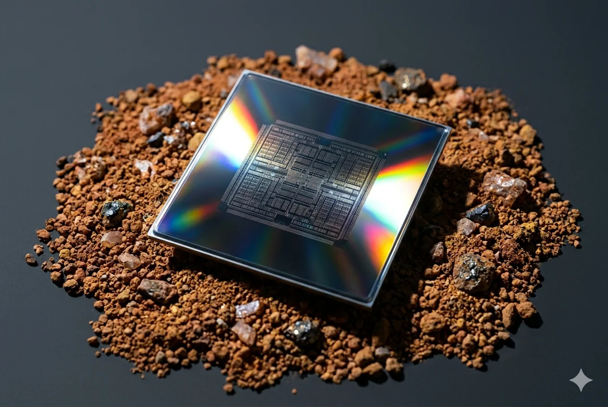

Inside a TSMC fab in Taiwan, at this moment, an Nvidia Blackwell die is being polished flat to within fractions of a nanometer. A few meters away, a lithography scanner is exposing the next wafer with extreme-ultraviolet light generated by vaporizing tin droplets with a 30-kilowatt laser, 50,000 times a second. This is the most precise industrial process in human history.
It runs on rare earth elements. China mines 70% of the world’s supply and refines 91% of it. America refines less than 1%.[1]
On Wednesday, the President of the United States flies to Beijing to negotiate continued access.
The recipe
The first step is the polish. Before a chip can be patterned, the silicon wafer has to be made flat to within fractions of an atom across an area the size of a dinner plate. This is done with a slurry of fine abrasive particles. The abrasive iscerium oxide, a rare-earth compound made almost entirely in China.[2]
Next comes lithography: the printing of the chip’s pattern onto the wafer using extreme-ultraviolet light. Three rare earths appear in the light path.Erbiumis doped into the optical fibers that amplify the laser’s pulse.Terbiumforms a special crystal — terbium gallium garnet — that lets light through one direction and blocks it in the other, protecting the laser from its own reflections.Thuliumwill be used in the next generation of these lasers, currently under development at Lawrence Livermore National Laboratory. The lithography machines that will use them are built by ASML — the Dutch company that supplies every advanced fab in the world.[3]
Between exposures, a metrology laser checks that the pattern came out right. The crystal at its heart is often Nd:YAG —yttrium aluminum garnet, doped withneodymium.[4] After exposure, the patterned features are etched into the silicon by corrosive fluorine and chlorine plasmas. To survive the plasma, the etch chamber is lined withyttrium oxide.[5]
Then comes deposition: laying down the metal films that become the chip’s wiring. The way to deposit a metal film is to put a solid block of it (a “sputtering target”) into a vacuum chamber and knock atoms off it with ions. Most sputtering targets are pure metals — copper, tungsten, titanium — but the targets that lay down the high-performance dielectric layers and certain barrier materials contain rare earths, most oftenyttriumandlanthanum.[6] Finally, the chip is packaged. In a modern AI accelerator, packaging means stacking multiple silicon dies into high-bandwidth memory — the “HBM” the industry talks about — and bonding them with millions of microscopic copper joints. Between each bonding step, the surfaces are polished flat again, with the samecerium oxideslurry that started the process.
Then the chip leaves the fab. It arrives at a hyperscaler datacenter on a server board cooled by spinning fans. The motors driving those fans are made from neodymium magnets — alloys of iron, boron, andneodymium, almost always with a small percentage ofdysprosiumorterbiumadded to keep them magnetic at high temperatures.[7] The same magnets power the hard drives, the liquid-cooling pumps that keep modern GPU racks from melting, and every motorized actuator in the rack.
Behind the chip, the tools that fabricated it run on the same chemistry. Every lithography scanner, every ion implanter, every etch tool — the precision motors are allneodymiummagnets, with the highest-performance versions in fab equipment carrying up to ten percentdysprosiumby weight.[8] The magnetic bearings on many cleanroom and vacuum pumps areneodymiumtoo. So are the robotic arms that move wafers between tools.
A modern AI accelerator is, in material terms, a tightly packed assembly of silicon, copper, and rare-earth elements. The silicon and copper have multiple commercial sources. The rare earths do not. Substitutes exist for some uses but perform worse — there is no commercial alternative to cerium oxide at advanced lithography nodes, and no replacement for the heavy rare earths in high-temperature magnets.
The dependency
China controls roughly 70% of global rare earth mining, 91% of separation and refining, and 94% of the world’s strongest permanent magnets — the kind used in motors, generators, and precision equipment.[9] The geological deposits that yield commercial quantities of the heavy rare earths used in those magnets — dysprosium and terbium — are a specific type of clay-bound ore (geologists call them ion-adsorption clays), found in commercial concentrations only in southern China and northern Myanmar. Together, they account for more than 99% of the world’s heavy rare-earth feedstock, with Myanmar production largely flowing into Chinese refineries.[10]
Last year, every gram of terbium America imported came from China. So did every gram of holmium, and every gram of lutetium. Net U.S. import reliance on heavy rare earths is 100%; the small share nominally sourced from third-country processors in Estonia, Japan, and Malaysia is itself derived from Chinese feedstock.[11]
This is the layer beneath the chip war. “Access, Disable, Destroy” mapped a three-switch model of AI infrastructure coercion: chips at the silicon layer, cloud at the infrastructure layer, models at the application layer.[12] The materials layer sits beneath all three. China has commercial and diplomatic reasons not to embargo rare earths outright — its producers want the revenue, and a formal cutoff would accelerate Western diversification.
The leverage operates instead through individual export approvals: China’s Ministry of Commerce (MOFCOM) requires a case-by-case license for any shipment of rare earths destined for advanced semiconductors. The trigger categories are logic chips at process nodes below 14 nanometers (every AI accelerator made today) and memory stacked with more than 256 layers (the high-bandwidth memory inside those accelerators). This licensing regime remains active throughout the November 2025 suspension.[13] A single review can stall a shipment indefinitely, even without a formal export ban. Diversification at the binding constraint takes time that the AI capex cycle does not have: industry estimates place full onshoring of heavy rare-earth refining at 5 to 7 years.[14]
The response
On February 2, 2026, Donald Trump announced Project Vault — a $12 billion strategic reserve of rare earth elements, modeled on the Strategic Petroleum Reserve that has insulated the United States against oil shocks since the 1970s. The signal: the administration now treats rare earth dependency as a national security exposure on par with energy security. The structure is a $10 billion, 15-year loan from the Export-Import Bank, plus roughly $1.7 billion of private capital, with procurement handled by three commodities trading houses.[15] They buy imported oxides and metals on behalf of civilian-sector manufacturers, who can draw down their allocations in a disruption and replenish them when supply normalizes.[16] At blended heavy rare earth prices — terbium oxide at $1,010 per kilogram, dysprosium at $239 — $12 billion is a serious buffer against price spikes and short interruptions.
It does not address the binding constraint. The United States has no commercial-scale heavy rare earth separation capability operating today.[17] MP Materials’ Mountain Pass heavy rare earth circuit, backed by a $150 million Department of War loan, targets 200 metric tons per year of dysprosium and terbium production from mid-2026.[18] Lynas, the only commercial-scale producer of separated heavy rare earths outside China, is expanding its Malaysia facility to a full suite of heavy rare earths within two years.[19] Combined Western capacity at full ramp is on the order of 600 metric tons per year of dysprosium and terbium by 2028 — a fraction of the heavy rare-earth content embedded in the 58,000 tons of permanent magnets China exported in 2024 alone.[20]
What Project Vault stockpiles is what comes out of the country it was designed to protect against. The reserve relocates the dependency one step upstream — from end-use to inventory — without changing the upstream geography. Meanwhile, the chokepoint is moving. In March 2026, Shenzhen launched a state-coordinated R&D program for domestic rare-earth-based polishing slurries — the same cerium oxide chemistry the wafer polish opens with, currently dominated by U.S. and Japanese suppliers.[21] The pattern is consistent: control raw materials upstream, control separation in the middle, and as Western capacity catches up at the upstream layers, move downstream into the higher-margin functional materials. Each Western response addresses a layer that the chokepoint has already moved past.
What to watch on Friday
The summit will produce announcements. Boeing purchases. Agricultural commitments. A bilateral Board of Trade. Possibly an extension of the November 2025 suspension beyond the November 10, 2026 expiry, framed as continued de-escalation.[22] None of these alters the materials layer.
Three things would. First, an exemption from MOFCOM’s case-by-case licensing for the rare earths used in advanced AI chips — the sub-14-nanometer logic and 256-layer memory categories now requiring individual Chinese approval. This would dissolve the most direct chokepoint. Second, a commitment to blanket licenses rather than per-shipment review for the functional materials flowing through semiconductor manufacturing: polishing slurries, sputtering targets, and non-military magnets. That would turn managed dependency into something predictable. Third, a mutual rollback of China’s October 2025 extraterritorial rule, which lets Beijing license any foreign-made product anywhere in the world that contains more than 0.1% Chinese-origin rare earths. That rule is currently suspended; rescinding it would close the November cliff rather than postpone it.
None of these is on the agenda that the U.S. Trade Representative previewed in April.[23] The summit is one whose success is measured by the absence of breakdown, not by the resolution of substance.
Every Blackwell, every MI300, every TPU, every Trainium, every HBM stack from Samsung and SK Hynix carries this recipe inside it. The rare earths are extracted from Chinese land. The chips are built by TSMC on Chinese land — or so they say.
Beijing claims both halves as Chinese. It controls only one. By Friday, the President will have negotiated with the half it controls. Taiwan, where the chips are made, will be the silence in the room.
Notes
[1] Mining figures:U.S. Geological Survey,Mineral Commodity Summaries 2025: Rare Earths, January 2025. China mined 270,000 metric tons of REO equivalent in 2024, accounting for 69.2% of the world total (390,000 tons); the United States mined 45,000 tons. Refining figures:International Energy Agency, “With new export controls on critical minerals, supply concentration risks become reality,” October 9, 2025. China = 91% of global rare earth separation and refining; 94% of sintered permanent magnet production. U.S. domestic production of refined rare earth compounds and metals in 2024 was approximately 1,300 tons (USGS) — roughly 0.3% of global production. Most U.S.-mined concentrate is exported for refining elsewhere, principally to China.
[2] Cerium oxide is the dominant abrasive in chemical-mechanical planarization slurries used for advanced-node silicon wafer polishing; its abrasive properties at sub-nanometer scales are not matched by available substitutes. Chinese mining accounts for the majority of global cerium supply, and Chinese separation accounts for the overwhelming majority of refined cerium oxide production.
[3]Lawrence Livermore National Laboratory, “LLNL selected to lead next-gen extreme ultraviolet lithography research,” December 23, 2024. Erbium-doped fiber amplifiers are standard in the seed-laser stages of EUV light-source pre-pulse generation. Terbium gallium garnet (TGG) is the standard material for Faraday optical isolators in DUV and short-wavelength laser systems, including those used in lithography, metrology, and inspection. Thulium-doped yttrium lithium fluoride is a candidate gain material for next-generation high-numerical-aperture EUV sources.
[4] Neodymium-doped yttrium aluminum garnet (Nd:YAG) is a long-established laser crystal used in fab metrology, alignment, inspection, and certain marking applications. SeeVimaterial industry overview, “Rare earth materials for a brighter future,” February 26, 2026.
[5] Yttrium oxide ceramic coatings are standard for plasma etch chamber liners due to their resistance to fluorine and chlorine plasma chemistries; they reduce particle contamination and extend chamber service intervals. See industry technical literature on plasma etch chamber materials.
[6] Sputtering targets composed of rare-earth metals and oxides are used in physical vapor deposition of barrier layers, electrodes, and functional thin films in semiconductor manufacturing. Yttrium, gadolinium, and other rare earths appear across multiple deposition recipes.
[7] Standard NdFeB permanent magnet formulations contain 1–3% dysprosium or terbium for elevated-temperature applications. Industry-standard composition; see also USGS MCS 2026,Rare Earths (Heavy)chapter.
[8] Higher-performance NdFeB grades used in precision-motion applications (semiconductor manufacturing equipment, certain medical devices, defense applications) can contain heavy rare-earth content of up to approximately 10% by mass, depending on temperature and demagnetization-resistance requirements.
[9] Mining share: USGS MCS 2025, op. cit. (China 270,000 / world 390,000 = 69.2% in 2024). Refining and magnet shares: IEA, op. cit. (91% separation, 94% sintered permanent magnets).
[10]Payne Institute for Public Policy (Colorado School of Mines), “Explainer on the MP Materials–Department of War Partnership,” August 2025. The principal global sources of separated heavy rare earths, such as dysprosium and terbium, are ion-adsorption clay (IAC) mining operations; the only notable IAC operations in the world are in China and Myanmar (>99%), with the Myanmar production typically flowing into Chinese separation facilities.
[11]U.S. Geological Survey,Mineral Commodity Summaries 2026: Rare Earths (Heavy), February 2026. US heavy rare-earth imports in 2025: 100 metric tons of compounds and metals. Net import reliance 100% across 2021–2025. Terbium imports 100% from China; holmium 100% from China; lutetium 100% from China (including Hong Kong); ytterbium 86% from China.
[12]“Access, Disable, Destroy,” The AI Realist.
[13]White & Case LLP, “China imposes extraterritorial jurisdiction and a 50% Rule for export controls on rare earth elements and other items,” October 2025. Article 4 of MOFCOM Notification 61/2025 imposes a case-by-case review for memory chips at 256-layer and above and logic at 14 nanometer and below, plus production and testing equipment.Carra Globe, “China Rare Earth Export Controls 2026,” May 2026: case-by-case review remains active during the November 2025 suspension. MOFCOM original text:Center for Security and Emerging Technology translation of Notice No. 61.
[14] Discovery Alert/industry analyst commentary, November 2025, citing industry consensus on heavy rare earth separation onshoring timelines.(B-tier; consistent with multiple industry sources but no single A-tier confirmation.)
[15]PBS NewsHour / AP wire, “WATCH: Trump announces plan for rare earth elements strategic reserve,” February 2, 2026;Fortune, “New ‘Project Vault’ critical minerals stockpile is ‘first step of many’,” February 3, 2026. Procurement firms named: Hartree Partners, Mercuria, Traxys.
[16]Quest Metals industry analysis, “Project Vault: $12 Billion Critical Mineral Stockpile,” February 5, 2026, describing draw-down and replenishment structure.
[18]MP Materials Q3 2025 earnings release, November 6, 2025; USGS MCS 2026,Rare Earths (Heavy)chapter, citing $150 million Department of War loan in August 2025.
[19] Lynas Rare Earths Q3 FY2026 results;Argus Media, “Lynas rare earth output rises in 3Q,” November 3, 2025;Rare Earth Exchanges, “Lynas Doubles Down on Heavy Rare Earths,” February 25, 2026.
[20] IEA, op. cit. China exported 58,000 tons of rare earth magnets in 2024.
[21]Rare Earth Exchanges, “China Targets Chipmaking Bottleneck: Rare Earth Polishing Project Launches in Shenzhen,” March 19, 2026.(B-tier source; project is announced state R&D, not yet commercial-scale; treat as directional signal.)
[22]Brookings, “What will happen when Trump meets Xi?,” May 5, 2026;Pakistan Today, “Trump-Xi talks to focus on trade, Iran and Taiwan,” May 8, 2026.
[23]Washington Times, “Chinese fentanyl exports, lock on rare earths to top Trump’s agenda at summit with Xi,” April 20, 2026, citing USTR Jamieson Greer testimony to House Appropriations subcommittee.